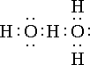

The ancient Greek 'four elements'
Water has had a key role in the development of modern science.
 The beginnings of water science
The beginnings of water science
 The discovery of hydrogen bonds
The discovery of hydrogen bonds
'water is the source of all life'
attributed to Thales of Miletus (624-546 BC)
Water has always fascinated us, as we need to live near freshwater to survive. Early civilizations knew the importance of rain and annual flooding to avoid life-threatening drought and hunger. Water had many uses, and there was a great need for it from springs and wells. Early peoples made clean water an essential part of their religions, and large quantities were required for their early civilizations. In early settlements, pathogens transmitted by contaminated water became a severe health risk. It was well known that the quality of the water influenced public health, and stagnant and smelly water was avoided when possible. Toilet facilities were mostly unhygienic. However, because of the difficulties involved, there was surprisingly little enthusiasm or success in understanding the unique properties of water until quite recently.
Thales of Miletus
Plato
 2009. Licensed under CC BY 2.5 via Commons - https://commons.wikimedia.org/wiki/File:Plato_Silanion_Musei_Capitolini_MC1377.jpg#/media/File:Plato_Silanion_Musei_Capitolini_MC1377.jpg")
The Ancient Greek philosophers put water as one of the four 'elements' together with 'fire', earth', and 'air' that made up the world (see above right), with water particularly important for life. These 'elements correspond to modern concepts of solid (earth), liquid (water), gas (air), and heat (fire). In particular,Thales of Miletus (c. 624 – c. 546 BC, see left) championed water as the principle factor creating nature. Two centuries later, Plato (c. 424 – c. 348 BC, see right) assumed these 'elements' corresponded to three-dimensional structures, particularly associating icosahedra with water (described on another page). These principles supported science for over two thousand years before the proof that these materials were not 'elements' was mooted in the seventeenth century before being established a hundred years later. The early scientific history of water accompanies chemistry and its associated celebrated chemists through atomic theory and electrochemistry [3475].
Henry Cavendish
The wealthy London scientist and aristocrat Henry Cavendish (1731 – 1810, see right)a discovered hydrogen (calling it 'phlogiston' or 'inflammable air' and reported that it produced water when reacted with oxygenb (called 'dephlogisticated air') [2454], so establishing water as a compound, not an 'element'. Antoine Lavoisier (1743 – 1794) later reproduced Cavendish's experiment and gave hydrogen its name (from the Greek for "water-former"). Cavendish discovered water's composition (two parts hydrogen to one part oxygen) in about 1781. This composition was confirmed in 1800 when the amounts of hydrogen and oxygen produced by the electrolysis of water were measured by Johan Ritter (1776 – 1810). Amadeo Avogadro (1776 – 1856) later (1811)c confirmed the equation,
Amadeo Avogadro
2H2 + O2 → 2H2O
Due, perhaps to the erroneously perceived simplicity of water, little further investigative work on water was attempted during the rest of the 18th and early 19th centuries.
H2O → H+ + OH−
Svante Arrhenius
was first described by Svante Arrhenius (1859-1927) in 1887, d who received the Nobel Prize for Chemistry in 1903.
As the anomalies of water were starting to be described, various possibilities were put forward for the state of liquid water. The state of the art at the end of the 1930s was comprehensively described by Ernest Dorsey (1873 – 1959) [2467], with that at the beginning of the 1970's being described in Felix Franks's (1926-2016) treatise [2469].
In 1957, Henry Frank and Wen-Yang Wen stated that long-lived structures (i.e., ices) within liquid water were not feasible but that a useful description was that of 'flickering clusters' [97]; 'These various effects seem explicable in a straightforward manner in terms of a new picture of water as consisting of flickering clusters of hydrogen-bonded molecules, in which the co-operative nature of cluster formation and relaxation is related to the partially covalent character which is postulated for the hydrogen bond''.
Although there have been plenty of studies on water, there did seem to be a hiatus after the 'polywater' fiasco in the 1960s that delayed progress. Since the 1990s experimental work has been strongly supported by computational methods that remain, however, restricted by computational power. At present, however, water research remains extremely active but with much controversy persisting.
[Back to Top  ]
]
'the hydrogen nucleus held between 2 octets constitutes a weak "bond."
Latimer and Rodebush (1920)
Coincident with our increasing knowledge concerning water during the last century was our knowledge concerning hydrogen bonding. Historical reviews of hydrogen bonding are available [1950]. The first hydrogen bond was drawn (if strictly incorrectly) by Werner in 1902 [789b] to show the structure of ammonium chloride (NH4Cl) as
H3N····H.Cl
The hydrogen bond in water was first suggested by Wendell Latimer (1893 – 1955) and Worth Rodebush (1887 – 1959) in 1920 [789a] f who stated:

"in terms of the Lewis theory, a free pair of electrons on one water molecule might be able to exert sufficient force on a hydrogen held by a pair of electrons on another water molecule to bind the two molecules together. Structurally this may be represented as " (see right).
This was a significant jolt to existing theory with the (correct) idea of the hydrogen atom taking part in two (at least partial) covalent bonds not readily accepted by some physicists and remaining (mistakenly) unaccepted by a few physicists up until the present day.
At about that time it was thought that of the two hydrogen bonds (donating) from each water molecule, one was stronger than the other [2470]; an idea that still resonates today [1604].
Later, on July 15, 1929, Linus Pauling (1901 – 1994; Nobel Prize in Chemistry in 1954, Nobel Peace Prize in 1962) used the term 'hydrogen bond' in a letter to William Bragg (Nobel Prize in Physics, 1915), and reported in [99] as " two O's are joined by a hydrogen bond, as are the two F's in the acid fluoride ion, FHF - ". Pauling thought the hydrogen bond to be electrostatic in nature as (he thought) hydrogen could only form a single covalent bond.
Water's hydrogen bonding was further expanded when Frank and Wen described "a new picture of water as consisting of flickering clusters of hydrogen-bonded molecules, in which the co-operative nature of cluster formation and relaxation is related to the partially covalent character which is postulated for the hydrogen bond".e
These hydrogen bonds were shown responsible for some of the anomalous properties of water, such as high boiling and melting points.
[Back to Top  ]
]
a Cavendish died in his Laboratory in 1810,, just 30 minutes' walk from the present site of London South Bank University. [Back]
b This was further confirmed by a later experiment performed by John Warltire (1738/9-1810) and reported by Joseph Priestley (1733-1804). [Back]
c A. Avogadro, An attempt to determine the relative masses of the elementary molecules of bodies and the proportions by which they enter into these combinations, Journal de Physique, (1811), lxxiii, 58-76. [Back]
d S. Arrhenius, On the dissociation of substances dissolved in water, Zeitschrift fur Physikalische Chemie, I (1887) 631-648. [Back]
e H. S. Frank and W.-Y. Wen, Ion-solvent interaction. Structural aspects of ion-solvent interaction in aqueous solutions: a suggested picture of water structure, Discussions of the Faraday Society, 24 (1957) 133-140. [Back]
f B. C. Gibb makes a case for 'T. S. Moore and T. F. Winmill, CLXXVII.—The state of amines in aqueous solution, Journal of the Chemical Society, Transactions, 101 (1912) 1635-1676' in B. C. Gibb, The centenary (maybe) of the hydrogen bond, Nature Chemistry, 12 (2020) 665-667. [Back]
[Back to Top  ]
]
Home | Site Index | Water molecule structure | hydrogen-bonding | LSBU | Top
This page was established in 2015 and last updated by Martin Chaplin on 30 October, 2021